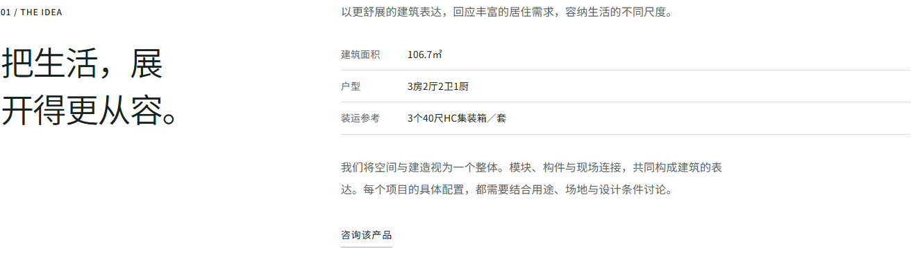
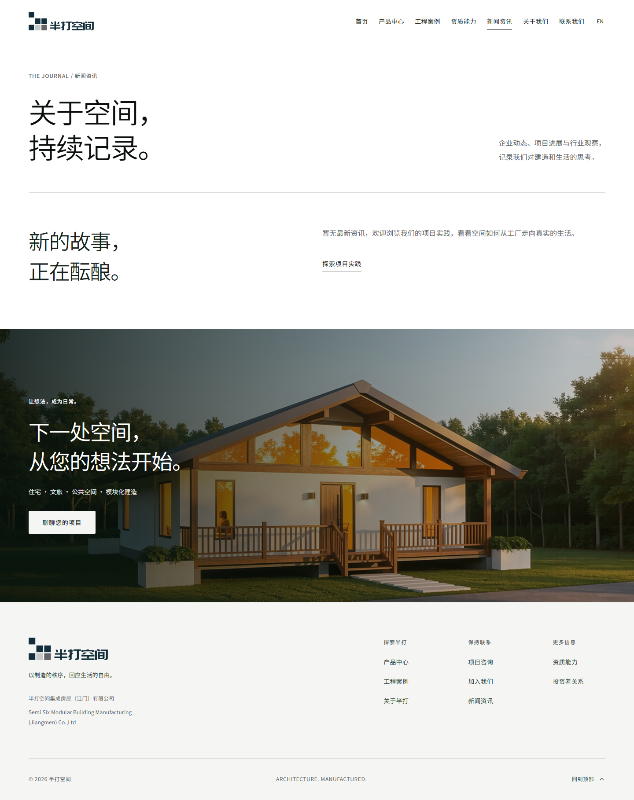
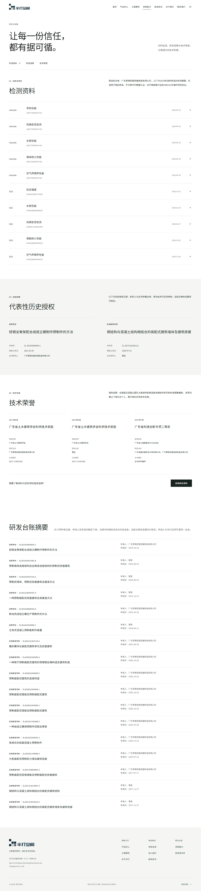

r33 · a6210c9 · 本轮视觉评审整体方向通过，仍需四项局部修正
以甲方视觉确认作为目标。保留当前设计语言，优先消除不自然断句、首屏主体裁切、联系路径过长及空栏目入口。本轮仅验收，没有修改线上页面。
本轮证据
33页 × 9档视口，共297项布局检查通过：无横向溢出、破图及受检正文图片比例异常。10组中英文Logo、锚点、悬停及键盘阅图状态通过。公网33个HTML与本地一致。
生成66张整页截图及18张轮播状态截图，人工重点复核核心页面与局部问题。自动检查通过不等于视觉全部合格。
V01 · 通过前修正产品标题断句不自然
1440px 下，6S 的“展开”、半打 8 的“上下”被拆到两行。无溢出，但文字语义与排版节奏受损。
建议：按语义分行并调整标题宽度，复查320至2560px，避免只给某一尺寸加硬换行。

点击截图查看原尺寸。V02 · 通过前修正4S 手机首屏裁切过紧
375px 英文产品首屏中，建筑两侧明显截断。所用 v11-4s-portrait-m.webp 实际为960×646横图，竖向首屏放大覆盖后造成裁切。
建议：优先选择现有素材中适合竖屏的构图；必要时仅在手机调整图文结构和首屏高度，保持画面边缘无黑白填充条。
 点击截图查看原尺寸。V03 · 通过前修正
点击截图查看原尺寸。V03 · 通过前修正联系页的信息优先级与布局仍需收紧
375×900视口首张二维码距文档顶约1523px，前方空间图片延长联系路径；1440px下微信章节高约902px，左侧文字与右侧三行联系信息失衡。
建议：手机将微信区提前至空间图片之前；桌面压缩联系区或重排联系人，三位联系人及二维码继续直接展示。
 点击截图查看原尺寸。V04 · 通过前修正
点击截图查看原尺寸。V04 · 通过前修正新闻与招聘空态仍有常规入口
新闻位于主导航和页脚；招聘位于关于子导航及页脚。进入后无新闻或职位，增加未完成观感。
建议：视觉提案阶段隐藏这些常规入口，保留旧地址；不编造内容、不用大幅空态填页面。

点击截图查看原尺寸。V05 · 可选精简资质页台账展示过长
检测列表、代表性授权、荣誉及17项研发台账连续展开，后段更像资料清单。
建议：保留精选摘要与必要归属说明，减少重复台账展示；次要资料可另设查看入口，主信息不折叠。

点击截图查看原尺寸。V06 · 可选优化联系位置图缩略图识别弱
现有地图覆盖范围较大，页面缩略图中的位置标注不够突出。
建议：把文字地址作为主信息；当前地图保留放大或弱化展示，不为填充版面强行突出，也不要求本阶段补素材。
保留与验收边界
保留现有字体、主次按钮、黑白章节、官方Logo、正文原比例图片、无文字轮播与阅图样式。素材不足可隐藏相关模块，不将缺素材或域名配置列为本轮视觉阻塞。
- Edge/Chromium；未覆盖实机Safari/iOS/Android
- 720×450为200%等效视口，不等于原生浏览器缩放
- 正文比例自动检查不判断摄影主体；首屏裁切依靠人工复核
- 动效未逐帧验收；本轮以减少动态效果模式下静态和交互状态为主
- 本轮不以历史单元测试、历史无障碍结果或此前视觉结论作为当前通过证据
完整记录 · 布局检查 · 交互状态